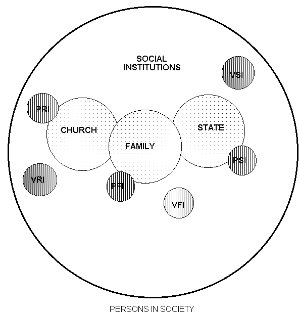

Westminster Confession of Faith
Chapter 23--The Civil Magistrate
1. What is the redemptive
history of social institutions? (See
Addendum # 1)
2. What, in general, do we
understand about culture such as to understand the importance of
"institutions?"
Human culture consist of both insitutions and persons-- both of which are
shaped to some degree by the other.
Peter Berger:
Society is a dialectic phenomenon in
that it is a human product,... that yet acts back upon its producer. Society is a product of man. There can be no social reality apart from
man. Yet it may also be stated that man
is a product of society. Every
individual biography is an episode within the history of society, which both
precedes and survives it. Society was
there before the individual was born and it will be there after he has
died. What is more, it is within society,
and as a result of social precesses, that the individual becomes a person, that
he attains and holds onto an identiy, and that he carries out the various
projects that consititute his life. man
cannot exist apart from society. The
two statements that society is the product of man and that man is the product
of society, are not contradictory.
(The
Sacred Canopy: Elements of a Sociological Theory of Religon, p.3)
3. What in general, is the
relationship between church and state in the Westminister Confession of
Faith? How are they alike and how are
they different? (in general terms)
4. (Skip, for now, Section 1 & 2) Note in Section 3 the profound
changes the American Presbyterians made in 1789, when, in their “Adopting Act,”
they adopted the Westminster Confession.
These changes reflect the development of what is called in political
circles “separation of church and state,” and what is called in theological
circles “the spirituality of the church.”
P3 Civil magistrates may not assume to
themselves the administration of the Word and sacraments; or the power of the
keys of the kingdom of heaven;
or, in the least,
interfere in matters of faith. Yet, as nursing fathers, it is the duty of
civil magistrates to protect the church of our common Lord, without giving the
preference to any denomination of Christians above the rest, in such a manner
that all ecclesiastical persons whatever shall enjoy the full, free, and
unquestioned liberty of discharging every part of their sacred functions,
without violence or danger. And, as
Jesus Christ hath appointed a regular government and discipline in his church,
no law of any commonwealth should interfere with, let, or hinder, the due
exercise thereof, among the voluntary members of any denomination of
Christians, according to their own profession and belief. It is the duty of
civil magistrates to protect the person and good name of all their people, in
such an effectual manner as that no person be suffered, either upon pretense of
religion or of infidelity, to offer any indignity, violence, abuse, or injury
to any other person whatsoever: and to take order, that all religious and
ecclesiastical assemblies be held without molestation or disturbance. (American version, 1789)
The civil magistrate may not assume to himself the
administration of the word and sacraments, or the power of the keys of the
kingdom of heaven: yet he hath authority, and it is his duty, to take order, that
unity and peace be preserved in the church, that the truth of God be kept pure
and entire, that all blasphemies and heresies be suppressed, all corruptions
and abuses in worship and discipline prevented or reformed, and all the
ordinances of God duly settled, administered, and observed. For the better effecting whereof, he hath
power to call synods, to be present at them, and to provide that whatsoever is
transacted in them be according to the mind of God. (Original version)
5. In the first paragraph, the Assembly summarizes Romans 13,
indicating that civil government is instituted by God, for his glory and the
good of the human race. Note how this
differs entirely from virtually all modern theories of government, most of
which ground the civil government’s authority in humans (most notably in French
Social-contract theories, but, to a lesser degree, in American Republicanism).
6. Notice that in section 2, the confession reflects a
"high" view of civil authority and government as a "sacred"
sphere for the common good-- this as distinguished from the anabaptist
"pacifist" position relative to the state. How do we distinguish between
a "pasifist" view and our view of the spirituality of the church as
discussed last week? (See also addendum
3 toward an understanding of insitutional spheres)
The second paragraph refutes the Anabaptist notion that the
believer is citizen exclusively of
the kingdom of God; and asserts the opposite, that the believer may indeed
participate in both kingdoms, the church and the state. This illustrates how
"church/state" has often been confused with
"christ/culture."
7. The theory of “just war”
is affirmed in paragraph 2. What New
Testament passage did the Assembly employ to defend this view? (See Addendum
#2, Duty Regarding the State)
8. What are some ways that
section 3 in the confession distinguished the extent and limits of civil
authority so as to preserve the exclusively "spiritual" extent and
limits of ecclesiastical authority as discussed last week? (see also Addendum
2)
9. Compare and contrast the
nature and duties of the church and state in their various capacities according
to George Gillespie in his famous One
Hundred and Eleven Propositions , laid before the General Assembly of 1647.
Notice also how these informed Stuart Robinson during the civil war, and how
his good friend and co-editor of the Presbyterial Critic, Thomas Peck, also
provides a good summary as from his Notes
on Ecclesiology .
1. That the state is
an ordinance of God considered as the creator, and, therefore, the moral
governor of mankind, while the church is an ordinance of God considered as the
saviour and restorer of mankind. The
state is ordained for man as man; the church for man as a sinner in a condition
of inchoate restoration and salvation.
The state is for the whole race of man; the church consists of that
portion of the race which is really, or by credible profession, the mediatorial
body of Christ. (275)
2. The next point of
difference between church and state is in the rules by which they are to be
respectively regulated in the exercise of their functions. The rule of the church is the word of God,
the Scriptures of the Old and New Testaments.
This is the statute book of the visible kingdom of Christ. The rule for the state is the “light of
nature,” or the human reason. The power
of the church is, strictly and only, “ministerial and declarative”; the power
of the state is magisterial and imperative.
The church has no power to make
laws, but only to declare the law of
God. All her acts of government are
acts of obedience to her Head and King.
The state has the power to make laws as well as to declare them; has a
legislative as well as a judicial power.
Hence, the form of government for the church, the regulative and the
constitutive principles of her organization, are not matters to be determined
by human reason, but to be derived from the Bible as the constitution and
statute-book: while, in the state,
these are matters to be settled by the history and condition of political
communities. The life of the state is
natural, and it is left to assume an organization for itself. The life of the church is supernatural, and
God prescribes an organization for it. (281)
3. The church and the state differ in their sanctions, as well as in their authority and their rule. The sanction of
ecclesiastical government is moral,
appealing to the faith and the conscience, a parental discipline, designed for the good of the offender. Its symbol is the “keys.” The sanction of
civil government is force, appealing
to the bodily sensibilities of the subject or the citizen; a penal administration, designed to
vindicate the majesty of justice and the supremacy of law, with a very
incidental, if any, reference to the good of the transgressor. It symbol is the “sword.” (287)
4. “The scope and aim of civil power is only things temporal; of the ecclesiastical power,
only things spiritual. Religious
is a term not predicable of acts of the state; political and civil, not
predicable of acts of the church.” (See
Robinson)
10. What does Robinson mean
by the "general American idea" as distinguished from the "New
England Idea" of the relation of church to state? (See "Two
Theories")
11. Notice Chapter 31,
Section 4 of the Confession and how the "spirituality" doctrine of
the church is clearly in view.
11. How might the
"spirituality of the church" be argued and why might this be not only
best for the Christian religion, best toward presevering Christ's Headship in
the church, but also best for common socieity as well? (see "Letters to
Theological Students")
12. According to section 4,
what are some of the duties of individual citizens to the civil state? (see
also Addendum 2)
13. As applied in some
practical ways:
a Do you think that the State should make
"blue laws", if so, when?
b.
In so far as our current public school system is an extention of the state,
1) Do you think this is right?
2) Is there a "place" for
religion in the public schools and if so in what circumstances? (see handout "A Reaffirmation of
Religious Liberty and the Civil Society")
3)
If you were asked to participate on a committee in the local public school
system concerning "religious holidays", how would you advise the
school to handle the whole issue?
c. Are there commands that believers are not bound to obey-- under which
circumstances. (see also Addendum # 2, "Duties Regarding State" and
Addendum # 3, "80 Miles an hour in Nebraska")
See also LC Question 127:
“Q What is the honor that inferiors owe to
their superiors.?
A The honor which
inferiors owe to their superiors is, all due reverence in heart, word, and
behavior; prayer and thanksgiving for them; imitation of their virtues and
graces; willing obedience to their lawful commands and counsels;…”
LC Question Question 128:
“Q What are the sins of inferiors against
their superiors?
A The sins of
inferiors against their superiors are, all neglect of the duties required
toward them; envying at, contempt of, and rebellion against, their persons and
places, in their lawful counsels, commands, and corrections;…”
d.
Would it be proper for a minister to also be the mayor of a city? Why?/Why not?
e.Is
there every a time when "revolt" against an existing civil state is
warranted? If so, under what
circumstances? How is
"revolt" distinguished from passive resistance?
Addendum # 1
A
Redemptive Historical Survey
The
Beginnings of 3 Spheres of Non-voluntary Social Institutions
I. Priestly/Cultic and Kingly/Cultural Commissions
in Creation-- both "sacred" in so far as they are God ordained and
both mediate a kind of presence of God in the world, albeit on "special
grace/redemption" and the other "common grace/providence."
A. Cultural Commission-- Kingdom Culture
Gen.
1:28-- Mandate
Multipliy-- in
the image of God, there is a re-recreation mandate as under his divine ordination!
Subdue/rule--
bringing the world under subjection (but not so as to exploit but rather to
accomplish "be fruitful and multiply."
B. Cultic Commission-- Kingdom
Sanctuary
Gen.2:2-
Sabbath Rest-- Coronation, Consecration, Celebration
Gen.2:9,
3:3-- the "alter" of God
C. Dual Commission Summarized:
Gen.2:15 "tend (cultivate) and "guard"
Note:
the word "guard" is used in Gen. 3:24-- the role of
"guarding" the presence of God...
D. Kingdom Polity-- The First
Institution
Gen.2:24-
Polity
As
God's image was "male and female" (1:27) God established a
"church" and "state" in the establishment of the
family. The word "cleave" is
used in covenantal relationships in acient treaties.. It was in this marriage
ordinance that creation mandates were to be accomplished-- both the
"culture" and "cultic" aspects.
Family as the first "human" society to
accomplish the cultic and culture mandate:
Gen. 1:26 Then God said, "Let Us make man in Our image,
according to Our likeness; let them have dominion over the fish of the sea,
over the birds of the air, and over the cattle, over all the earth and over
every creeping thing that creeps on the earth.Gen. 1:28 Then God blessed them,
and God said to them, "Be fruitful
and multiply; fill the earth and subdue it; have dominion over the fish of the
sea, over the birds of the air, and over every living thing that moves on the
earth.''
Gen. 2:20 So Adam gave names to
all cattle, to the birds of the air, and to every beast of the field. But for
Adam there was not found a
helper comparable to him.
It is the foundational society from which all
other societies (church and state) are formed...
Samuel Davies:
The great Author of our nature,
who has made us sociable creatures, has instituted various societies among mankind,
both civil and religious, and joined them together by the various bonds of
relation. The first and radical society
is that of a family, which is the nursery of the church and state. This was th
socieity instituted in Paradise in the state of innocence, when the indulgent
Creator, finding that it was not good for a man, a sociable creature, to be
alone, formed a helpmeet for him and united them in th eendearing bonds of the
conjugal relatoin. From thence, the
hyuman race was propagated; and when multiplied, it was formed into civil
governments and ecclesiastical assemblies...
II. The Post-Fall Seperation of Church and State
yet still under the Family Polity
A. State: The Remedial City of Cain
Gen.4:11-17
Notice
formation-- out of family
Notice
purpose- "remedial" or to provide "common grace" to Cain
who had been "excommunicated" from the covenant purposes through
Abel... "As the provision of God's common grace, the city is a benefit
serving mankind as at least a partial, interim refuge which the fallen race,
exiled from paradise, has been driven.
Thus
Rom. 13:1 Let every soul be
subject to the governing authorities. For there is no authority except from
God, and the authorities that exist are appointed by God. 2 Therefore whoever resists the authority
resists the ordinance of God, and those who resist will bring judgment on
themselves. 3 For rulers are not a
terror to good works, but to evil. Do you want to be unafraid of the authority?
Do what is good, and you will have praise from the same. 4 For he is God's minister to you for good.
But if you do evil, be afraid; for he does not bear the sword in vain; for he
is God's minister, an avenger to execute wrath on him who practices evil. 5 Therefore you must be subject, not only
because of wrath but also for conscience' sake. 6 For because of this you also pay taxes, for they are God's
ministers attending continually to this very thing. 7 Render therefore to all their due: taxes to whom taxes are due,
customs to whom customs, fear to whom fear, honor to whom honor.
Notice:
Utopian Delusion-- State at best can only be remedial
See
then Gen. 9
Significantly
then, when the Lord republished the cultural ordinances within the historical
framework of his common grace for the generality of fallen mankind, he did not
attach his Sabbath promist to this common order. The ordinance of the Sabbath was not reissued in the revelation
of the common grace order either in Gen.3:16-19 or in th covenantal
promulgation of it in Genesis 9. This
withholding of the Sabbath sign from common grace culture is a clear indication
of the non spiritual character of that culture. For to place the stamp of the Sabbath on a cultural program is to
set it apart as "holy unto God." as a bearer of the divine name and
of the promise of being crowned with consummation glory. Meredith kine
I.e.
"Common grace was introduced to act as a rein to hold in check the curse
on mankind and to make possible an interim historical environment as the
theater for a program of redemption"
Meredith Cline
B. New City of God-- Line of
Abel/Seth
Genesis
5-- "not so much the history of the Sethites per se as it is the history
of the covenant institution P.120)
Israel
was like the Sethite commmunityh of Genesis 5 in that it was, esssentially,
family bounded and it was organized about an earthly alter
Early
on, a Preistly, Prophetic and kingly function... in the "alter, prophets
and patriararchial polity
The "new society" is only built by God as mediated through both the Old and New Testament Church of with Christ is its ultimate savior as "prophet, priest and king." We see a foretaste in the not yet perfected church of the redemption accomplished by Christ for our heavenly city.
Addendum
#3
Social
Picture of Human Culture

Institutional Definition and Comparision
I. Non-Voluntary institutions: (Church, State, Family)
Bannerman: "claiming to be of God, and appealing
to His authority for its existence and outward establishment on the
earth." (p.21)
1. Have
divine appointment in Scripture.
2.
Persons are morally obligated to support and participate. (Thus "non-voluntary)
3. Each
non-volunatary institution are intended to act in a way complementary to, but
not contradictory to, the other.
3.
There are three, and only three, non-voluntary institutions:
a. Church: Owing its orgin, mission,
order and practice to special revelation.
b. State: Owing its origin and
mission to special revelation but not its order, theory or practice-- the latter being left to common (natural)
revelation as determined best for the
common good.
c. Family: Owing its origin, mission
and order to special revelation, but not
limited in practice to special
revelation.
II. Voluntary Insitutions:
Definition:
Institutions that are determined to be useful in society but are otherwise of
human origin and therefore do not oblige
support.
1. They
are not of divine institution and we are not morally obligated to support them
or participatein them-- thus "voluntary association"
2.
Whereas certain activities may overlap with activities of non-voluntary
institutions, they by nature cannot substitute or usurp or compete with
non-voluntary instutions.
Example:
it would not have as it's mission statement "to make disciples of
Christ" or "excecute justice for the common good" since these
are mission statements of a non-voluntary institution which are uniquely in
their divine appointment.
3.
Voluntary institutions consist of social individuals who organaize themselves
to offer some benevolent service or product with the best interest of societyy
in mind, albeit as from a "common good" platform or a "special
grace platform."
4.
Example:
Christian
Politcal Coalitions
Special
Interest Groups(Dobson's Focus on the
Family, Pro-life organizations, Christian relief efforts, Orphanages, Habitat for Humanity)
III. Para-Organizations:
Difinition:
Institutions that provide support services and products that are used by either
non-voluntary or voluntary organizations. These institutions are usually funded
by and informally accountable to the non-voluntary organization that utilized
their service.
1. A service that might even be necessary but not
inclusive to the mission of the church, state
or family.
2. A service that is complementary to the mission of the
church, state or family but never in
replace of it.
3. Very possible to service all or one of the
nonvoluntary institutions at the same time.
Exampl
4 Examples:
a. Church Supply Co.
b.Graduate Education
c. Publishing Houses
General
Observations
1. "Church and State" has been confused
with "Christ and Culture."
This
is mainly due to the de-institutionalization of the Church. With the demise of ecclesiology proper there
has been a corrresponding confusion regarding "church and state." As the visible church has been swallowed up
into obscurity, so then the State begins to swallow up culture. While it is true that the Church
(visible) ought not to be estabished by
the State or the State controled by the church, it is another thing altogether
to suggest that religion (special grace institutions) and state (common grace
institutions) ought not to have influence in culture. To there believe in th church's exclusively "spiritual"
mission is NOT the same as Christ against culture-- if by this we mean that the
Christian faith and worldview is not relevant to or for the renewal of culture.
3. Must not confuse the
duty and practice of individual persons with the duty and practice of
individual institutions.
TP May
22, 1862, Vol.1, Nm.8
"History
establishes no truth more clearly than this, that when the Church has engaged
in any manner in political difficulties, its best interests, its influence for
good, and its religious character have suffered. Individual members of the Chruch have their responsibilities as
citizens and as politicians and their durties are of a totally different sort
from those of the Church collectively.
Their religion should, indeed ,make them better citizens; but their
citizenship in this world is one thing, and their citizenship of the great Church is another thing. The Church , as such , has absolutely no
concern with those works in which it is the highest worldly duty of the man to
engage. The church owes no allegiance to any earthly power; it owes no fealty
to any monarch or government. What
allegiance the members of the Church who have gone from this world to another
existence now, that , an that only, the body of the Church on earth owes; for
there is no divided loyalty in it, and no part of the Church , in Jerusalem or
Antioch, in England or America, on earth or in heaven, owes any allegiance
which all the other parts do not equally owe.
The mistake of confounding the duty of the individual citizen and
church-member, with the duties of the church, has led to the most fatal errors
in this country. It led to similar
errors at varioiius periods in history.
It has been worth of remark that the most wise directors of the great
chruch organizations of the Christian world have understood this principle in
times past, and have guarded against the errors of which we speak, while at
times, weak-minded Popes, bishops, and clergy have endeavored to throw the
weight of the Church in the politics of the day, and always with most damaging
effect on its importance and postion."
"The
Gospel Idea of Preaching" (Presbyterian Critic, July, '55, p.315ff)
"If
the preacher's business is the redemption of the soul, and his instrument is
Bible truth, it is plain that he has no business in the pulpit, with Nebraska
bills, Abolitionism, politics, Eastern questions, and all the farrago of
subjects, with which infidel ministers of christianity essay to eke out, as
they suppose, the deficient interest and power of the massage of
salvation. The preacher's business in
the pulpit is to make christians; and not to make free-soilers, Maine-law men,
statesmen, historians, or social philosophers... The question may be asked:
"Are Bible principles never to be applied, then, to the correction of the
social evils of the day, by those who are the appointed expounders of the Bible?" So far as God so applies them in the Bible,
yes; but no farther.... Has he ceased to be a citizen and a patriot, because he
has become a Minister? No. But when he appears in the pulpit, he
appears not as a citizen, but as God's herald.
Here is a very simple and obvious distinction much neglected. The other channels of patriotic influence
are open to hem, which other citizens use: so far as he may use them without
prejudice to his main calling. To
cleave to this alone, is made his obvious duty by three reasons. The importance of the soul's redemption is
transcendent. All social evils, all
public and national ends, sink into trifles beside it... Again, by securing the redemption of the
soul, the preacher will secure all else that is valuable in his hearers. Let him make good christians, and all the
rest will come right without farther care.
IF we have a nation of Bible Christians, we shall have without trouble,
all the social order, liberty, and intelligence we need..."
(Point: Make Christians who will inturn make good citizens. Not Christ vs. Culture, but Christ in Culture through "indirect" influence of church)
Addendum
2
More Specific Duties of the Fifth
Commandment: State
T. David Gordon
I. The institution of civil government
A.
The Scripture
1.
Genesis 9: 6 “Whoever sheds the blood of a human, by a human shall that
person’s blood be shed; for in his own image God made humankind.”
2.
Romans 13:1 “Let every person be
subject to the governing authorities; for there is no authority except from
God, and those authorities that exist have been instituted by God. 2 Therefore whoever resists authority
resists what God has appointed, and those who resist will incur judgment. 3 For rulers are not a terror to good
conduct, but to bad. Do you wish to have no fear of the authority? Then do what
is good, and you will receive its approval;
4 for it is God’s servant for your good. But if you do what is wrong,
you should be afraid, for the authority does not bear the sword in vain! It is the servant of God to execute wrath on
the wrongdoer. 5 Therefore one must be
subject, not only because of wrath but also because of conscience. 6 For the same reason you also pay taxes,
for the authorities are God’s servants, busy with this very thing.”
B.
The Westminster Confession, 23:1
1.
“God, the supreme Lord and King of all the world, hath ordained civil
magis-trates, to be, under him, over the people, for his own glory, and the
public good: and, to this end, hath armed them with the power of the sword, for
the defense and encouragement of them that are good, and for the punishment of
evil doers.”
II. The mandate of civil government-- to mediate the common grace of
God for the common good.
A.
The maintenance of justice: punishing
the wicked and exonerating the righteous.
B. The
well-being of its citizens
III. The authority of civil government
A.
To punish: Gen. 9:5-6; Rom. 13:1-7
B. To
tax: Mat. 22:21
C. To
wage just war: (Gen.9:5-6, Rom.13:1-7)
Acts
10:1 “In Caesarea there was a man
named Cornelius, a centurion of the Italian Cohort, as it was called. 2 He was a devout man who feared God with
all his household; he gave alms generously to the people and prayed constantly
to God.”
Lk.
3:9-14: “‘Even now the ax is lying at
the root of the trees; every tree therefore that does not bear good fruit is
cut down and thrown into the fire.’
And the crowds asked him, ‘What then should we do?’ In reply he said to them, ‘Whoever has two
coats must share with anyone who has none; and whoever has food must do
likewise.’ Even tax collectors came to
be baptized, and they asked him, ‘Teacher, what should we do?’ He said to them, ‘Collect no more than the
amount prescribed for you.’ Soldiers
also asked him, ‘And we, what should we do?’
He said to them, ‘Do not extort money from anyone by threats or false
accusation, and be satisfied with your wages.’”
IV. The limits of civil government
A.
May not intrude upon other institutions ordained by God.
Mt.
22:21 “Give therefore to the emperor
the things that are the emperor’s, and to God the things that are God’s.”
B. May
not bind the conscience (Nebuchadnezzar had no proper authority over the
conscience of Shadrach, Meshach, and Abednego).
C. May
not destroy those rights which are inherent and natural, namely, the right to
obey God (the only right which, by nature, as made in God’s image, we have).
V. The citizen’s responsibility to civil government
A.
Scripture
1. To
obey all laws that do not require sin per
se.
2. To
suffer the penalty of passive resistance to unjust government.
Acts
4:19 “But Peter and John answered
them, "Whether it is right in God's sight to listen to you rather than to
God, you must judge;”
Acts
5:29 “But Peter and the apostles
answered, "We must obey God rather than any human authority.”
3. To
labor, insofar as one is capable under the state's authority to see the state
fulfil its purpose.
4. To
revolt only when the government persistently fails to execute justice and to
promote the well-being of its citizens, and when the revolution will probably
promote a government more likely to execute justice and promote the citizens’
well-being. (Note the difference
between "passive resistance" and what amounts to "private
revolt.")
a. Justification of
revolution. Note that the duty to obey
the magistrate in Rom. 13:2-4 is based upon three realities: that the magistrate is “what God has
appointed” that the magistrate is “not a terror to good conduct, but to bad”,
and “is God’s servant for your good.”
Thus, when the civil magistrate does not function as God has appointed
it to function; or is a terror not to
bad conduct, but to good; or when the civil magistrate is not a servant of God for the good of the people, the biblical ground for submission is gone.
b. Whether revolution is a private
right. The orthodox tradition has
always held that the right of revolution is not individual, but corporate. An individual act of revolt is in fact
treasonous. The magistrate’s duty to
serve “for good” is a corporate duty; the magistrate must serve the people as a
whole for good. What is good for the
whole may often be troublesome to individuals, yet this does not justify
revolt. E.g., imminent domain laws are
essential to the establishing of efficient transportation routes and emergency
routes, even though they may be inconvenient to those most directly effected by
them. Similarly, the power to conscript
into military service is more inconvenient for those subject to such
conscription than to others; yet it is for the common “good” that such is done.
In
almost all circumstances, revolt is wicked if done merely for ideological
reasons (the preference of one form
of government over another), since any form
of government is capable of serving
the people for their good, and any form
of government is capable of disserving the people. Example: We prize
democracy, and some are apparently zealous enough about it to consider revolt
solely on the ground of establishing a democracy. Yet, what is a democracy, but the right to choose governors? And what have we a right to require of our governors, other than
what God requires of them (to execute justice, and serve our good)? Thus, if a dictator executed justice and
served the good of the people, it would be wicked to revolt, in order to choose someone to do what is already
done. That is, the sripture defines the
purpose of government, not the method of government. Thus, while we may properly debate the
question of the relative merits of various methods of government, we may not
revolt merely on that ground.
Churchill’s comment in the House of Commons (11/11/47) may be
apropos: “Many forms of government have
been tried and will be tried in this world of sin and woe. No one pretends that democracy is perfect or
all-wise. Indeed, it has been said that
democracy is the worst form of Government except all those other forms that
have been tried from time to time.”
More cynical, while containing an element of truth, was Dr. Samuel
Johnson’s observation: “I would not
give half a guinea to live under one form of government rather than
another. It is of no moment to the
happiness of an individual.”
c. When, if ever, revolution is
prudent. If, in overthrowing a
government, evil conduct is increased (because there is no governor to suppress
it), then the result of revolt is
worse than the ground of revolt. If revolt does not result in “your good,”
corporately considered, then the result was worse than the cause. Here it would be well to consider
Bosnia-Herzegovina, and R. L. Dabney’s wise comment that: “a harsh and unjust government is a far less
evil than the absence of all government”.
B.
The Westminster Standards
1.
WCF. 23:4 “It is the duty of people to
pray for magistrates, to honor their
persons,to
pay them tribute or other dues, to obey their lawful commands, and to be
subject to their authority, for conscience’ sake. Infidelity, or difference in
religion, doth not make void the magistrates’ just and legal authority, nor
free the people from their due obedience to them: from which ecclesiastical persons
are not exempted, much less hath the pope any power and jurisdiction over them
in their dominions, or over any of their people; and, least of all, to deprive
them of their dominions, or lives, if he shall judge them to be heretics, or
upon any other pretense whatsoever.”
2.
WCF 20:4 “And because the powers which
God hath ordained, and the liberty
which Christ hath purchased, are not intended by God to destroy, but
mutually to uphold and preserve one another, they who, upon pretense of
Christian liberty, shall oppose any lawful power, or the lawful exercise of it,
whether it be civil or ecclesiastical, resist the ordinance of God.”